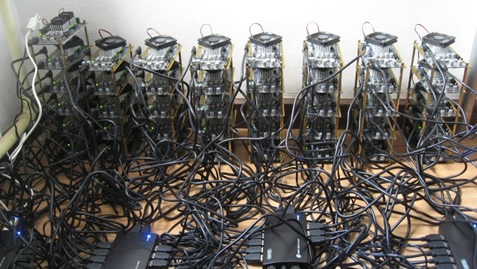
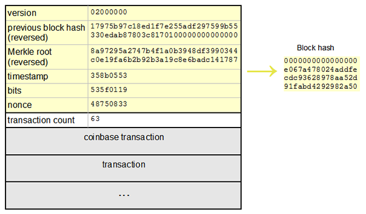

Bitcoin In Depth:
A cryptographical journey
by Maximiliano Cañellas
Bitcoin:
una {muy} breve introducción.
- Moneda «digital»
- Creada por Satoshi Nakamoto en 2008 {Paper}
- Totalmente descentralizado {red Peer-To-Peer}
- Anónimo
- Deflacionario por diseño
Mi contribución:
¿Cómo funciona?
Componentes principales
Wallets {billeteras}
Transacciones {TXs}
Cadena de bloques {blockchain}
Bitcoin Wallets {billeteras}: ¿Cómo se construyen?
16UwLL9Risc3QfPqBUvKofHmBQ7wMtjvM
Generación de wallets: formula resumida
chk3(dsha2562(IDNet1 + ripemd160(sha256(pKey))))) Base58Encode(chk + ripemd160(sha256(pKey)))
¿?
Algoritmos y funciones de hashing involucradas
- Elliptic Curve DSA (ECDSA) {Cripto asimétrica}
- SHA-256 {Función de hashing}
- RIPEMD-160 {Función de hashing}
- Base58 Encoding
Generando una wallet: paso a paso
0 · Teniendo una clave ECDSA privada
18E14A7B6A307F426A94F8114701E7C8E774E7F9A47E2C2035DB29A2063217251 · Usamos la clave pública correspondiente a esta
0450863AD64A87AE8A2FE83C1AF1A8403CB53F53E486D8511DAD8A04887E5B23522CD470243453A299FA9E77237716103ABC11A1DF38855ED6F2EE187E9C582BA62 · Aplicamos SHA-256 a dicha clave pública
600FFE422B4E00731A59557A5CCA46CC183944191006324A447BDB2D98D4B4083 · Al hash SHA256 resultante le aplicamos RIPEMD-160
010966776006953D5567439E5E39F86A0D273BEE4 · Agregamos el byte de versión delante del hash RIPEMD-160 (0x00 Main Network)
00010966776006953D5567439E5E39F86A0D273BEEGenerando una wallet: paso a paso
5 · Apicamos SHA-256 al resultado de agregar el byte de versión al hash RIPEMD-160 resultante
445C7A8007A93D8733188288BB320A8FE2DEBD2AE1B47F0F50BC10BAE845C0946 · Aplicamos otra vez SHA256 al hash SHA256 anterior
D61967F63C7DD183914A4AE452C9F6AD5D462CE3D277798075B107615C1A8A307 · Del SHA256 anterior tomamos los primeros 4 bytes (checksum)
D61967F68 · Agregamos los 4 bytes de checksum del paso anterior al hash RIPEMD-160 extendido por el byte de versión.
00010966776006953D5567439E5E39F86A0D273BEED61967F6
9 · Convertimos el resultado anterior (byte array) a una wallet Bitcoin utilizando Base58 encoding.
16UwLL9Risc3QfPqBUvKofHmBQ7wMtjvM
Generando Bitcoin wallets
La secuencia anterior puede resultar bastante larga y compleja
Pero, en la práctica, resulta mucho más sencillo

DEMO TIME!
Transacciones Bitcoin
Una transacción es el proceso mediante el cual, cantidades de Bitcoin o sus fracciones pasan de ser propiedad de una wallet {persona} a otra, mediante una serie de reglas definidas en el protocolo.
Algunas de estas reglas son controladas por un lenguaje de Script exclusivo de Bitcoin
Algunos de los operadores importantes de este lenguaje:
- OP_EQUAL
- OP_CHECKSIG
- OP_HASH160
Lenguaje Completo
Tipos de Transacciones
- Pay-to-Public-Key-Hash {P2PKH}
- Public-key
- Multi-signature {15 keys}
- Pay-to-Script-Hash {P2SH}
- Data Output {OP_RETURN}
Estructura de las transacciones
Transacciones: Input & Outputs
En Bitcoin no existe un "balance de cuenta", este se genera mediante la sumatoria de todos los Outputs existentes asociados a una wallet.
Pero entonces ¿qué es un Output?
Un Output es una estructura de dato que se genera en practicamente toda transacción y define las condiciones necesarias para transferir el monto de Bitcoins asociado a esta y las reglas para validarla. Enviar Bitcoins a alguien es, esencialmente, crear un Unspent Transaction Output o {UTXO} asignado a su dirección {wallet}
Inputs: Son, básicamente, punteros a UTXOs
Unspent Transaction Outputs {UTXOs}
La estructura de los UTXOs tiene dos componentes fundamentales:
- La cantidad de Bitcoin(s) a "transferir"
- El lockingScript a que especifica las condiciones a satisfacer para poder volver a hacer uso del monto transferido previamente.
Ejemplo de lockingScript
Un lockingScript tiene el siguiente formato:
OP_HASH160 «Public Key Hash» OP_EQUAL OP_CHECKSIG
Y el unlockingScript que lo satisface en este caso {P2PKH} sería:
«Private Signature» «Public Key»
El Script de locking/unlocking completo:
«Private Signature» «Public Key» OP_HASH160 «Public Key Hash» OP_EQUAL OP_CHECKSIG
True => TX válida
False => TX inválida
Así se ve una transacción real:
Input:
Previous tx: f5d8ee39a430901c91a5917b9f2dc19d6d1a0e9cea205b009ca73dd04470b9a6
Index: 0
scriptSig: 304502206e21798a42fae0e854281abd38bacd1aeed3ee3738d9e1446618c4571d10
90db022100e2ac980643b0b82c0e88ffdfec6b64e3e6ba35e7ba5fdd7d5d6cc8d25c6b241501
Output:
Value: 5000000000
scriptPubKey: OP_DUP OP_HASH160 404371705fa9bd789a2fcd52d2c580b65d35549d
OP_EQUALVERIFY OP_CHECKSIG
Bitcoin Blockchain
"La cadena de bloques {blockchain} es una base de datos que contiene todas las transacciones realizadas hasta la actualidad, la cual es compartida por todos los nodos que participan en la red del protocolo Bitcoin. Una copia completa de la cadena de bloques contiene toda transacción realizada desde su creación."
Pero .. ¿cómo funciona?
Bloques
Los datos de las transacciones son guardados a través de archivos llamados "bloques". Un bloque es un registro de todas las transacciones Bitcon recientes que no han sido registradas en ningún bloque previo.
Estructura
El campo blockheader es de especial importancia
¿Cómo se construye un bloque?
Mediante un proceso conocido como "Bitcoin Mining"
¿Qué es un miner?
El proceso de Mining
{kind=link}
- Bits: Dificultad
- Nonce: Number used Once
SHA256(blockheader(nonce)) <= dificultad {Bits}
¿Qué gana el miner aportando todo este poder de cómputo?
Bitcoins {coinbase transaction}
Datos Interesantes:
- Un bloque se genera aproximadamente cada 10 minutos
- Dentro de los bloques se incluyen al rededor 500 transacciones
- La dificultad de mining se reajusta cada 2016 bloques (2 semanas aprox.)
- El reward por el trabajo de mining se divide a la mitad cada 4 años
- La emisión de Bitcoins se termina en el año 2140 {21.000.000}
- La cadena de bloques pesa actualmente al rededor de 16GB
- Recibir "una confirmación" en una transacción es que el sistema descubra y apile un nuevo bloque sobre el cual está incluída dicha transacción
Fuentes

Datos de contacto:
- Bio: maxidev.github.io
- Twitter: twitter.com/maxidev_